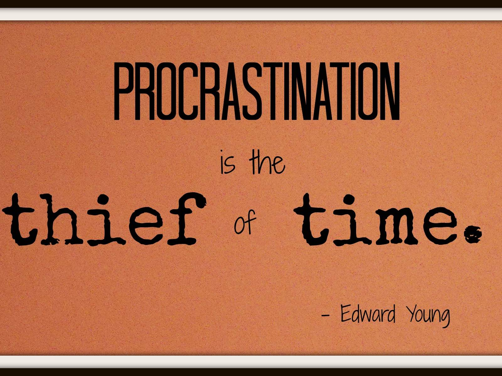

<!DOCTYPE html><html><head><meta charset="utf-8"><meta http-equiv="X-UA-Compatible" content="IE=edge"><title>How to overcome procrastination? — blog</title><link rel="dns-prefetch" href="//maxcdn.bootstrapcdn.com"><link rel="dns-prefetch" href="//cdn.mathjax.org"><link rel="dns-prefetch" href="//cdnjs.cloudflare.com"><meta name="viewport" content="width=device-width, initial-scale=1"><meta name="robots" content="all"><meta name="keywords"><link rel="canonical"><link rel="stylesheet" href="../../../../static/gen/styles.css?h=726a28ca"><script type="text/javascript" src="../../../../static/gen/app.js?h=56f85b4f" charset="utf-8"></script><link rel="stylesheet" href="../../../../static/pygments.css"><link href="//fonts.googleapis.com/css?family=Merriweather:900,900italic,300,300italic&subset=latin-ext,latin" rel="stylesheet" type="text/css"><link href="//fonts.googleapis.com/css?family=Lato:900,300&subset=latin-ext,latin" rel="stylesheet" type="text/css"><link href="//maxcdn.bootstrapcdn.com/font-awesome/latest/css/font-awesome.min.css" rel="stylesheet"><script type="text/javascript" src="//cdn.mathjax.org/mathjax/latest/MathJax.js?config=TeX-AMS-MML_HTMLorMML">
    </script><link rel="apple-touch-icon" sizes="57x57" href="/apple-touch-icon-57x57.png"><link rel="apple-touch-icon" sizes="114x114" href="/apple-touch-icon-114x114.png"><link rel="apple-touch-icon" sizes="72x72" href="/apple-touch-icon-72x72.png"><link rel="apple-touch-icon" sizes="144x144" href="/apple-touch-icon-144x144.png"><link rel="apple-touch-icon" sizes="60x60" href="/apple-touch-icon-60x60.png"><link rel="apple-touch-icon" sizes="120x120" href="/apple-touch-icon-120x120.png"><link rel="apple-touch-icon" sizes="76x76" href="/apple-touch-icon-76x76.png"><link rel="apple-touch-icon" sizes="152x152" href="/apple-touch-icon-152x152.png"><link rel="apple-touch-icon" sizes="180x180" href="/apple-touch-icon-180x180.png"><link rel="icon" type="image/png" href="/favicon-192x192.png" sizes="192x192"><link rel="icon" type="image/png" href="/favicon-160x160.png" sizes="160x160"><link rel="icon" type="image/png" href="/favicon-96x96.png" sizes="96x96"><link rel="icon" type="image/png" href="/favicon-16x16.png" sizes="16x16"><link rel="icon" type="image/png" href="/favicon-32x32.png" sizes="32x32"></head><body class="site"><div class="site-wrap"><header class="site-header px2 px-responsive"><div class="mt2 wrap"><div class="measure"><a href class="site-title">Zen Life</a><nav class="site-nav"><a href="../../../../">Home</a><a href="../../../../blog/">Blog</a><a href="../../../../about/">About</a><a href="../../../../now/">Now</a></nav><div class="clearfix"></div></div></div></header><div class="post p2 p-responsive wrap" role="main"><div class="measure"><div class="page"><div class="post-header mb2"><h1>How to overcome procrastination?</h1><p class="post-meta"><time class="dt-published" datetime="2016-12-01">Dec 01, 2016</time></p></div><article class="post-content"><div class><p>Everyone is the slave of procrastination. When a task is difficult, people are trying to avoid it. So people often procrastinate. That is, we will do the important ask unless we have to do it in the last minute. You can imagine how anxious and desperate you are when you find that the important task has not been finished and the deadline is just hours away. What we usually do is to scratch our heads and force us to finish it, as the price of not finishing the important task is extremely high.</p><p>It is true the more one procrastinates, the more anxiety one has. Procrastination could also diminish your productivity. People often find that procrastination is the worst enemy in work and life. One often asked question is "How I can overcome procrastination". That is the question that I often ask myself and search online to find a solution.</p><h2>How can I overcome the habit of procrastination?</h2><ol><li><strong>Forget about rationale</strong> When you decide what to do in the next few hours, logics and rationale do not help. You probably have one dozen reasons that you don't want to do the important tasks. Remember, you just have one thing to do for the next few hours. Try not to argue with yourself whether you want to do the task. Just do it and do nothing else. This is as simple as that.</li><li><strong>Positive attitude</strong> Nobody can be always positive about anything. Relax and tell yourself life is good and I love my work. Day dream the positive outcome if you finish your work.</li><li><strong>Establish some disciplines and reward mechanism</strong> Establish discipline and reward policy. If you finish the work, you need to reward yourself by doing things you like, such as a relaxing walk, listening to your favorite music, and watching a short movie. Your task is in your task list, there will be some bad outcome if you can not finish it on time. Although you anxiety level will increase if you can not finish it, you also need to let yourself know clearly the importance of checking it off your list. Any negative feelings are much less important than your resistance of doing the task. Try to restrain yourself from the negative feelings.</li><li><strong>Motivate yourself</strong> When you feel your mode is low, set alarm and then listen to some music. Write motivational messages on the wall or on sticky notes in your computer. Whenever you find out that you are off the track, turn to these motivational messages.</li><li><strong>Start immediately on the task</strong> It is difficult to start. One always tries hard to avoid the difficult and somewhat boring work. Nowadays there are a lot of distractions. Formulate a routine that start immediately without arguing with yourself whether you need to start. When you write down a task in the list, you have already decided it is important and you have to do that first thing in the morning. Just start and do it, as simple as that. No one can be comfortable and productive at the same time. You choose this career, there must be something you truly love in your heart. What you are doing right now makes you one step closer to your dream. </li><li><strong>Distraction-free work environment</strong> In the Internet age, there are many distractions from news media, tweeters, Facebook, online bbs. Your life is bombarded with lots of information, most of which are not useful. It is a hug time sink. The distraction and interruption will kill your valuable time for the work that can help realize your dream. When you start your session (e.g. 25 min pomodoro), do not turn on your cell phone, open web browser to surf the website, or respond to emails (emails are rarely emergent).</li></ol><p>Simply put, <strong>be your life's master, not slave.</strong></p></div></article></div></div></div></div><footer class="center"><div class="measure"><small> &copy; Copyright 2016 by bbchen. Theme <a href="https://github.com/eswarm/piktor">Piktor</a> by <a href="http://eswarm.in">Eswar Malla</a>, fork of <a href="https://github.com/johnotander/pixyll">Pixyll</a></small></div></footer><div class="ga-script"><div id="ga-script"></div><script type="text/javascript">
        (function(i,s,o,g,r,a,m){i['GoogleAnalyticsObject']=r;i[r]=i[r]||function(){
        (i[r].q=i[r].q||[]).push(arguments)},i[r].l=1*new Date();a=s.createElement(o),
        m=s.getElementsByTagName(o)[0];a.async=1;a.src=g;m.parentNode.insertBefore(a,m)
        })(window,document,'script','//www.google-analytics.com/analytics.js','ga');
        ga('create', 'UA-72141705-1', 'auto');
        ga('send', 'pageview');
</script></div></body></html>